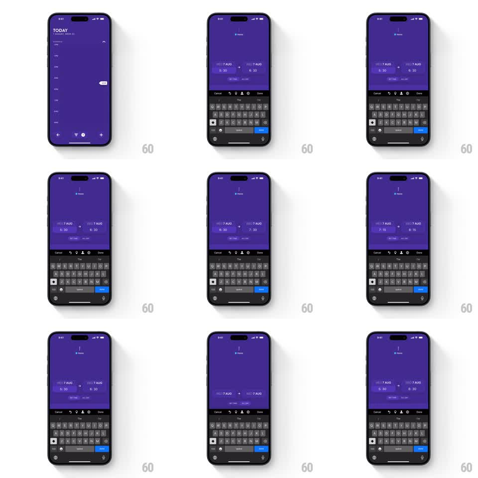

Media
Frame-by-frame

Rebuild this interaction 1:1: Timepage's date-time slider - horizontal scrubbing adjusts an event's start and end times together, with elastic feedback at the boundaries.

Rebuild this interaction 1:1: Timepage's date-time slider - horizontal scrubbing adjusts an event's start and end times together, with elastic feedback at the boundaries. Note: the pipeline's first-pass footage for this slug was a wrong video (Rain Alerts); the prompt is written for the corrected per-shot footage (Gumlet poster-asset video). ## Integration Integration: stack-agnostic spec - springs given as stiffness/damping, timed motions as duration + curve; map every value to your framework and animation library of choice. ## Scene An event-editing view: the event's time range shown as a horizontal band with start and end handles, date and time labels above. Dragging horizontally scrubs the times; the whole range moves together, and the labels tick through values live. ## Motion spec Pattern: dual-handle time scrub with elastic edges. - Drag anywhere on the band: start and end times move in lockstep (duration preserved), mapping horizontal travel to minutes at ~1px = 2min, snapping to 5-minute increments with a soft magnetic ease (spring ~500/35 per snap). - Labels roll through values like a slot reel (digit columns translateY, 150ms per step) as times change. - At day boundaries: the band stretches with rubber-band resistance (overscroll up to ~40px, resistance factor ~0.35) and the date label flips with a bounce when the drag commits past the edge. - Release with velocity: the band glides (decay ~0.92/frame) and settles onto the nearest snap with a small overshoot. - Dragging a single handle stretches the range instead: the opposite end anchors, intermediate tick marks spread apart with elastic spacing, and duration text pulses (scale 1.0 to 1.06, 200ms) as it changes. ## Calibration - Snap magnetism must be gentle enough to drag through - never a hard stop at each 5-minute step. - The slot-reel digit roll only animates the digits that change; stable digits stay put. ## Reduced motion Times update instantly with drag; no elasticity or digit rolls. ## Don't miss - Start and end never cross: at zero duration the handles resist and squash together (scaleX 0.96) rather than swapping. - Haptic-style tick feedback (or its visual equivalent - a 40ms tick mark flash) on every snap.